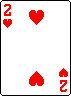

<main class="howto">
    <section class="howto-body" aria-label="How to play">
        <h2>Room</h2>
        <p>Each room is filled with 4 interactable cards.<br />You may <em>flee</em> or <em>fight</em> the room.</p>

        <h3>Flee</h3>
        <p>If you choose to flee, all 4 cards on the table will be restacked at the bottom of the dungeon. Then, 4 new cards will be drawn.</p>
        <p>You may not flee 2 rooms in a row.</p>

        <h3>Fight</h3>
        <p>If you choose to fight, you should interact with 3 cards. After that, 3 new cards are drawn and creates a new room. The 1 card remaining follows you to the next room.</p>

        <h2>Interacting with cards</h2>

        <h3>2-10 of Diamonds</h3>
        <p>These are your <span class="howto-term howto-weapon">weapons</span>. You may only hold 1 weapon. If you select another, the old one will be discarded.</p>

        <h3>2-10 of Hearts</h3>
        <p>These are <span class="howto-term howto-health">health potions</span>. Your HP will increase by its rank. Your HP cannot exceed your initial HP (20).</p>
        <p>You may only drink 1 potion in a room. Any potions consumed after will fizzle and have no effect.</p>

        <h3>2-A of Spades &amp; Clubs</h3>
        <p>These are <span class="howto-term howto-enemy">enemies</span>. You may kill it by using your weapon or your bare fist.</p>
        <p>The rank of J, Q, K, A are 11, 12, 13, 14.</p>
        <ol>
            <li>
                <p><strong>Using a weapon</strong></p>
                <p>Weapons can reduce damage when killing an enemy. The damage that you take is the enemy rank - weapon rank, minimum 0.</p>
                <p>However, killing an enemy with a weapon makes it dull. You can use a weapon to an enemy only when it has lower rank than the last enemy that you've killed with that weapon.</p>
            </li>
            <li>
                <p><strong>Using your bare fist</strong></p>
                <p>The damage you take is equal to the enemy rank. It does not dull your weapon, so use it wisely.</p>
            </li>
        </ol>

        <h3>J-A of Diamonds</h3>
        <p><em>(Only in Scoundrel+)</em></p>
        <p>These are <span class="howto-term howto-repair">repair kits</span>. When used, it will remove the last enemy that you've killed from your weapon.</p>

        <h3>J-A of Hearts</h3>
        <p><em>(Only in Scoundrel+)</em></p>
        <p>These are <span class="howto-term howto-poison">poison potions</span>. When used, you will take 10 damage.</p>
        <p>You may only drink 1 potion in a room - that includes poison potions! Any potions consumed after will fizzle and have no effect.</p>

        <h2>Score</h2>
        <p>When you interact with all of the cards without reaching HP 0, you win. The score becomes your remaining HP. If the last card you used was a health potion, its rank is added up to your score. The maximum score that you can achieve is 30.</p>
        <p>If you reach HP 0, you lose. The score becomes the minus of the sum of the enemies that you didn't kill.</p>

        <button class="card-button howto-menu-button" type="button" data-action="menu">
            
            <span class="menu-label">Main Menu</span>
        </button>
    </section>
</main>
